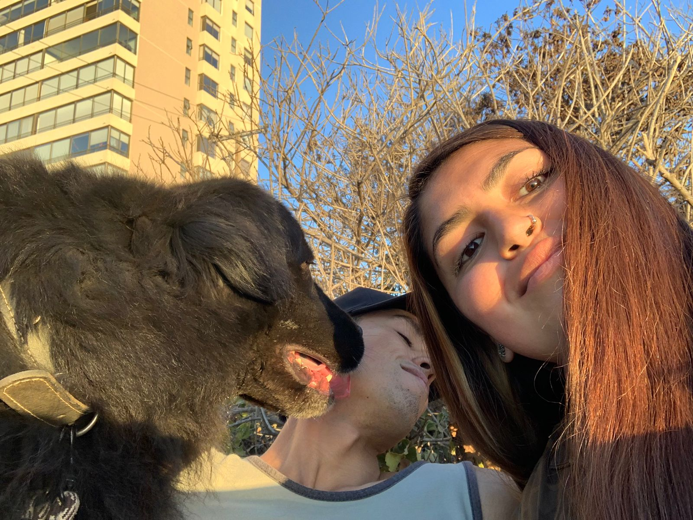

Es una persona correcta, siempre quiere lo mejor para todos, no existe el odio ni malas intenciones en su mente, es baja, tiene rulos como pirulo, a mi me gustan 🥰 pero la mayoria de las veces los oculta, se preocupa de ella y de los suyos. Es una guerrera, como dice una canción del bad bunny 🐰, aveces es bastante enojona, poca paciencia para algunas cosas y cuando algo no sale como lo esperaba, se frustra, pero sabe seguir adelante.
